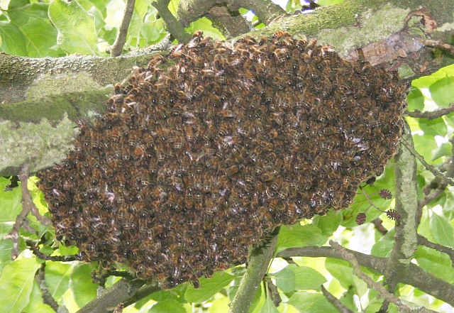
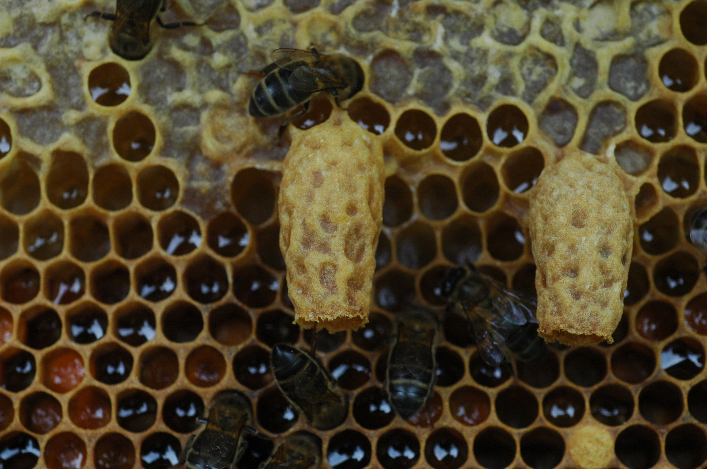
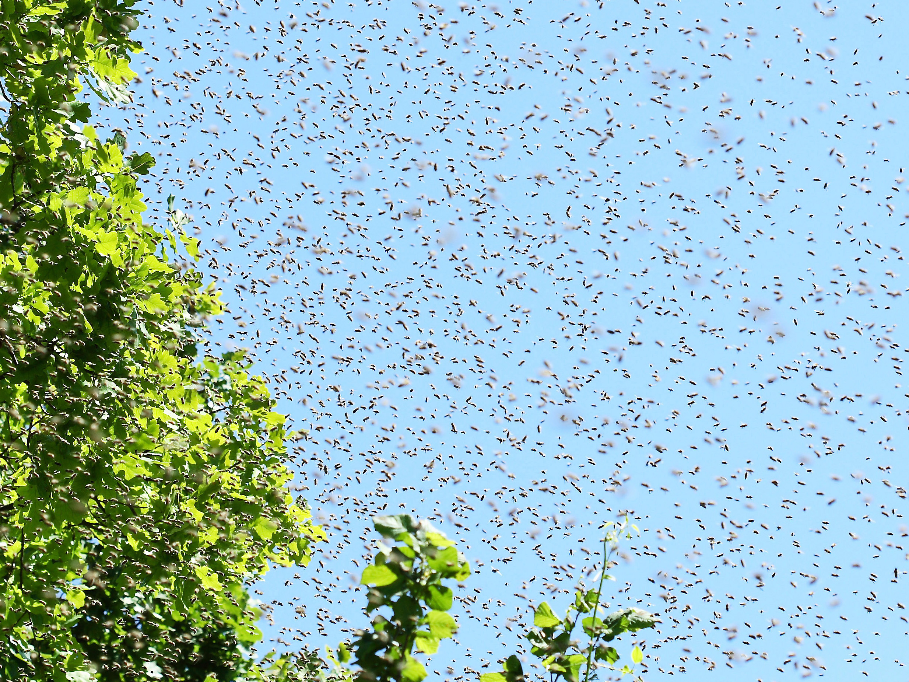

You just saw thousands of bees appear out of nowhere and settle in a mass on a nearby tree. It looks freakish, but this is actually one of the most carefully orchestrated events in the world of bees.
Read onA honeybee swarm is how a colony reproduces. Normally a swarm is not a sign of danger, disease, or disturbance, but swarming can sometimes occur in unhealthy colonies. A healthy hive that is ready will reproduce by swarming, creating two different colonies where there was one before.
When a colony grows large enough, roughly half to 3 quarters of the bees leave with the old queen to start over somewhere new. They leave behind developing queen cells and some workers to protect and nurture them, as well as a supply of honey.
The group that left, generally called the prime swarm, typically numbers between 8,000 and 15,000 bees, but this depends on the size of the original colony. They leave in a giant sparse cloud of bees, then settle into a tight cluster on a branch, fence post, or really any convenient surface nearby. Then, they wait while a small group of scouts searches for a new home.
Swarming bees are about as docile as they ever get. Having just gorged on honey before departure, and with no hive or brood to defend, they have little reason to sting.
- University of Florida
There are several conditions that could push a colony toward swarming. In most cases, more than one factor is at work at once.
In the spring and summer, the comb tends to fill up pretty fast since there is an abundance of nectar. If the queen has nowhere to lay eggs and workers have nowhere to store their food, the colony will begin to prepare for a split.
AFter a successful winter buildup, a healthy colony follows a deep biological impulse to reproduce at the species level. This instinct is strongest during the warm temperatures and long days of early summer.
As the population of the hive grows during the spring, the queen's pheromones (which normally suppress the bees'urge to swarm) become too diluted across all of the workers. The lack of the chemical tells the workers to begin building queen cells.
There are a lot of other factors that can contribute to a hive swarming, like too many mites, disease outbreaks in the colony, or pest infestations like wax moths. In these cases, a colony may swarm as a survival mechanism to escape the bad environment.
Swarming isn't generally a sudden surprise. The colony spends weeks preparing, and a beekeeper who knows the signs can spot them before they leave.
Workers begin constructing longer cells along the lower edges of frames. These are cells for raising new queens. Their presence is an early sign that swarming is being prepared.
Workers stop feeding the old queen as much, causing her to lose weight. If the queen is lighter, she can fly better, and she will need to fly when the swarm departs.
A few hundred (depending on the size of the colony) foragers start leaving the hive to investigate potential nest sites. They will inspect hollow trees, wall cavities, and other enclosed spaces, measuring volume and entrance size.
Right before departure, swarm bees fill their honey stomachs with about three days worth of energy reserves. This fuel will last them through the transition to a new home.
Scout bees scuttle rapidly over the combs, vibrating their wings and bumping into other bees. This "buzz run" is the signal to launch. Within minutes, the swarm fills the air.

When the swarm launches, it forms a churning airborne cloud. For a few minutes, the bees swirl in what looks like chaos. But the swarm has direction.
Only about 5% of the bees in flight are scouts -- the ones who already know where they are headed. Research by Stefan Janson and colleagues showed that scouts guide the swarm by flying through it at a slightly faster speed than the rest, pointed toward the target site. The uninformed bees follow the average direction of those around them, and gradually the entire swarm moves the right way.
The swarm almost always lands nearby first, usually within 100 meters of the original hive. This temporary cluster is not a permanent home. It is a staging point while the scouts finish deliberating.
The cluster can hold in place for a few hours or up to several days. During that time, the bees regulate their temperature collectively, maintaining the cluster core at around 35 degrees Celsius to keep the queen healthy.

The way a swarm chooses its new home is one of the more remarkable decision-making processes in nature. The researcher Thomas Seeley spent decades studying it, and described it in his book Honeybee Democracy (Princeton University Press, 2010).
Between 200 and 300 scout bees fan out from the cluster, searching up to 30 square miles of surrounding land. Each scout evaluates potential cavities independently, looking for specific qualities: a volume close to 40 liters, a small entrance, a south-facing opening, and a location several feet off the ground.
When a scout finds a promising site, she returns to the cluster and performs a waggle dance. The vigor and duration of the dance reflects how good the site is. Other scouts observe, visit the site themselves, and come back to dance in support if they agree. Scouts who found weaker sites dance less and less over time, eventually stopping altogether.
When enough scouts are all dancing for the same site, roughly 15 to 20 scouts at the site simultaneously, a quorum has been reached. Those scouts return to the cluster and produce a "piping" signal, pressing their thorax against other bees and vibrating at around 250 Hz. This is the final launch command. The whole swarm lifts off and flies directly to the new home.
Seeley's experiments showed that swarms chose the best available site out of several options in four out of five trials. The process is not perfect, but it is reliably good.
The waggle dance encodes both direction and distance. Multiple scouts dance simultaneously, and bees observe and compare before deciding which site to visit.
The answer depends on who you are. Choose below.
A swarm in your yard is not an emergency. Swarming bees are calm and focused on finding shelter, not on you. Here is what to do.
Keep people and pets away from the cluster. Do not disturb the bees or spray them with water or anything else.
Most swarms move on within 24 to 48 hours once the scouts have reached a decision. If the cluster is not in your way, the easiest option is simply to wait.
If the swarm is in a bad location or you need it removed sooner, contact a local beekeeper. Many beekeepers will collect swarms for free since a swarm is a free colony of bees. Your county extension office can often provide a referral.
Killing a swarm is unnecessary in almost every case and removes beneficial pollinators. A beekeeper can almost always collect the bees alive.
Swarm prevention is one of the more demanding parts of hive management in spring. Here are the key steps.
Check frames every 7 to 10 days from early spring through midsummer. You are looking for queen cells, particularly capped ones along the bottom bars.
Add supers before the hive fills up. Congestion is one of the main triggers. A colony with room to store nectar and expand brood is less likely to swarm.
If you find early queen cells, a split mimics a swarm artificially. Move several frames of brood, bees, and a queen cell into a new box. This relieves the congestion and gives you an additional colony.
If your colony does swarm, you can often collect it. Shake or brush the cluster into a box with a frame or two of drawn comb. Move the box to its permanent location after dark.
After a swarm, the parent hive will raise a new queen. Check 2 to 3 weeks later to confirm the new queen is laying. If you find only drone brood or no eggs, you may need to re-queen.
This site draws on the following sources. Follow the links to read further.